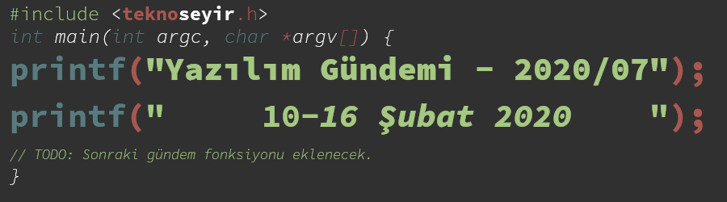
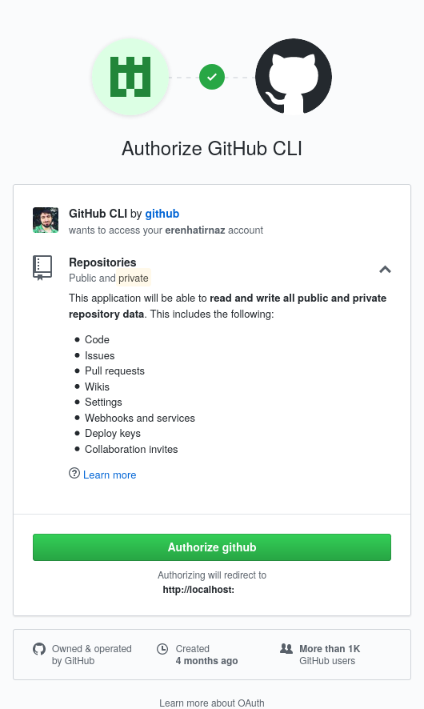
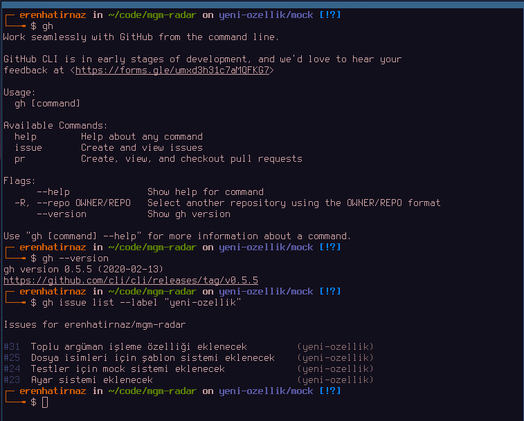
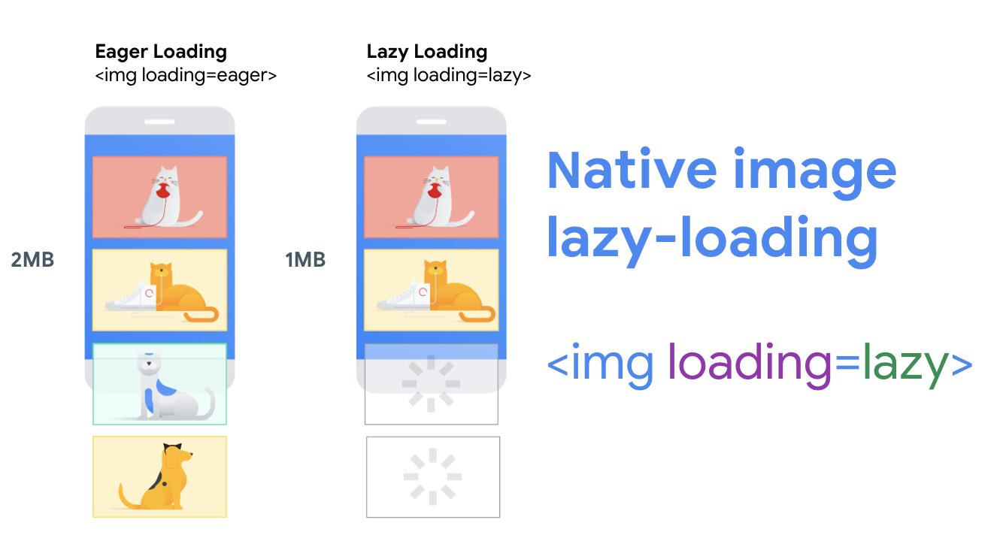
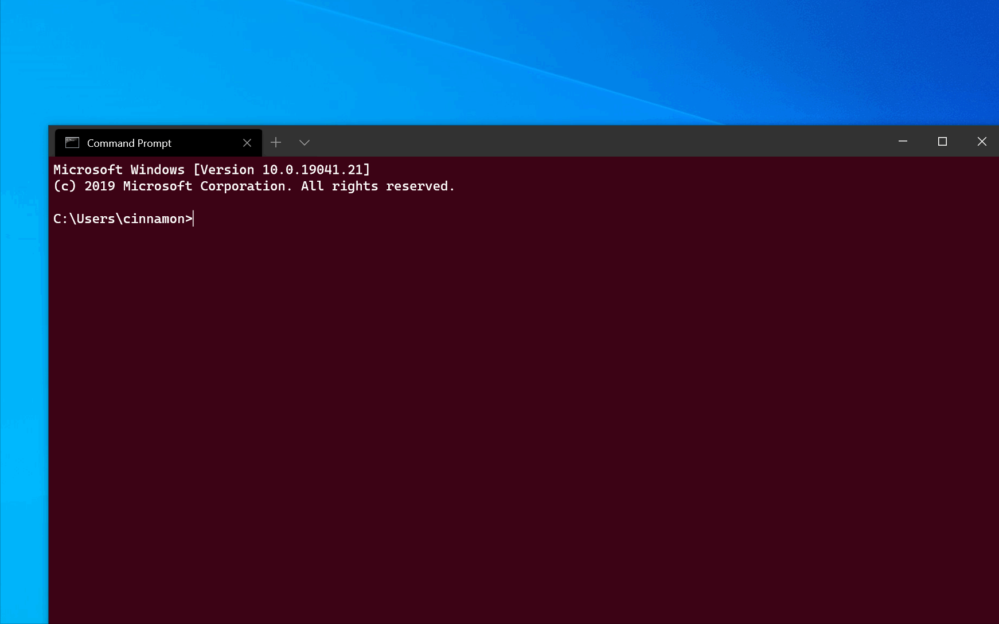

Yazılım Gündemi - 2020/07
10-16 Şubat 2020
İçindekiler

< Önceki Gündem | 10-16 Şubat 2020 | Sonraki Gündem >
1 GitHub komut satırı aracının beta programını tanıttı
Komut satırı araçları biz geliştiriciler için olmazsa olmazlardan birisi. Elbette aramızda pek komut satırı kullanmaktan hoşlanmayanlar da olabilir fakat mutlaka en az 1 ya da 2 tane komut satırı aracı kullanmak durumundadır. GitHub da kendi hizmetleri için bir komut satırı aracı çıkardı. Henüz beta programında olan bu komut satırı aracı ile şunları yapabilmekteyiz:
- Issue'leri listeleme ve filtreleme
- Issue sayfasını tarayıcı ile açtırma
- Pull Request oluşturma
- Pull Request durumunu yazdırma
- Pull Request'i bilgisayara checkout yapma
Şu an beta programında olduğu için çok stabil çalışmasını beklemek yersiz fakat ben yine de yazıya birkaç görüntü ekleyebilmek için denedim.
Bu sayfadan işletim sisteminize göre olan kurulum dosyasını indirip,
kuruyorsunuz. Ben Linux için olanı kurdum (sudo dpkg --install
gh-0.5.5-linux-amd64.deb). Sonrasında bilgisayarınızdaki bir git dizininin
içine giriyorsunuz (elbette remote'lar arasında github olmak zorunda) ve gh
issue list komutunu çalıştırıyorsunuz. Bu komutu ilk kez çalıştırdığınızda
size "tarayıcınızda github'ı açıp izin vermek için enter tuşuna basın" diyor.
Enter'e bastığınızda ise şöyle bir sayfa açılıyor:

Şekil 2: Görüldüğü gibi bayağı bir izin istiyor ama uygulama zaten GitHub'ın kendine ait olduğu için sıkıntı yok
GitHub CLI uygulamasına hesabınızın tüm izinlerini verdikten sonra işlem başarılı olmuşsa sizden bir kere daha Enter tuşuna basmanızı isteyecek ve bastığınız ise ilgili github deponuzdaki bütün issue girişlerinin listesini verecek.

Şekil 3: Ben kendi depomda denedim.
Komut satırı aracında bulduğunuz hataları bildirmek ya da özellik talebinde bulunmak için bu github deposunu ziyaret edebilir ya da bu formu doldurabilirsiniz.
Ayrıca bu hafta içerisinde GitHub, Microsoft for Startups hizmeti ile birlikte GitHub Enterprise çözümünün ücretsiz sunulacağını da duyurdu.
2 Tembel resim yükleme (lazy-loading) özelliği HTML standardı oldu

Türkçeye çevirince biraz komik bir ifade oldu ama İngilizcesinden anlaşıldığı üzere bu özellik sayesinde artık bir web sayfasını açtığınızda tüm resimler aynı anda yüklenmeyecek resimin konumuna göre sayfa scroll edildikte yüklenecekler. Böylece gereksiz trafik oluşturmaktan kurtulacağız. Hali hazırda bu özelliği zaten birçok web sitesinde görmüşsünüzdür fakat artık bunun için ekstra bir kütüphane ya da araça gerek kalmayacak, doğrudan tarayıcı tarafından desteklenecek.
Bu özelliği kullanmak için HTML kodlarımızı bu şekilde düzenlememiz yeterli olacak:
<img loading=lazy src="img/teknoseyir.png">
Özellik hakkında detaylı bilgi almak için şu blog yazısını okuyabilirsiniz.
Özelliğin HTML standardı olduğunu duyuran Google Chrome çalışanının tweet'ine ise şuradan ulaşabilirsiniz.
3 Windows Terminal Preview v0.9 yayınlandı
Microsoft'un yaklaşık bir yıldır geliştirmeye devam ettiği yeni Windows Terminal uygulamasının v0.9 Önizleme sürümü bu hafta içerisinde duyuruldu.
Bu sürüm ile birlikte artık komut satırından da yeni bir Windows Terminal penceresi oluşturabiliyoruz. Üstelik oluşturulan bu yeni terminal penceresini yeni sekme, bölümlenmiş ekran gibi özelliklerle birlikte de oluşturabiliyoruz. Yani tek bir komut ile terminal sekmesini istediğiniz parçalara bölüp o parçalarda istediğiniz uygulamaları çalıştırabilirsiniz.
Örneğin önce sekmeyi ortadan ikiye dikey bölüp, sonra da sağ tarafı ortadan ikiye yatay bölmek için şöyle bir komut çalıştırabilirsiniz:
wt -d C:\Users\cinnamon\GitHub\WindowsTerminal ; split-pane -p "Command Prompt" ; split-pane -p "Ubuntu" -d \\wsl$\Ubuntu\home\cinnak -H
Bu komutun çıktısı ise şu şekilde: 
Ayrıca bir terminal penceresini kapatmak istediğinizde her zaman "tüm sekmeler kapatılsın mı" sorusunu sormasın istiyorsanız bunun için de bir ayar eklendi. Bunu etkinleştirmek için Windows Terminal ayarlarına şu satırı eklemeniz yeterli:
"confirmCloseAllTabs": "true"
Böylece terminal penceresini kapatmak istediğinizde tüm sekmeler de hemen kapatılacak.
4 Qt 5.15 Alpha sürümü yayınlandı
C++ ile platformlar-arası uygulama geliştirmeye yarayan framework Qt'nin 5.15 Alpha sürümü bu hafta içerisinde yayınlandı. Henüz Alpha seviyesinde olması nedeniyle çalışan uygulamalarınızı bu sürüme yükseltmeniz tavsiye edilmiyor ama farklı projelerde kullanıp, bulduğunuz hataları Qt takımına raporlayabilirsiniz. Bu sürüm ile birlikte gelen yeni özellikler için bu wiki sayfasını ziyaret edebilirsiniz.
Ayrıca Qt 5.14.0 sürümüyle birlikte artık "yeniden konumlandırılabilir" oldu. Ben de ilgili blog yazısının başlığını okuyunca anlamamıştım ama yazıyı okuyunca fark ettim ki aslında kast edilen: Qt'nin kurulduğunu dizini değiştebilirsiniz. Böyle bir ihtiyacınız varsa bu blog yazısını okuyabilirsiniz.
Son olarak da KDAB geçtiğimiz sene düzenlediği Qt World Summit 2019 etkinliğinin tüm videolarını bu hafta içerisinde paylaşmış. İlgili duyuru yazısı için buraya tıklayabilirsiniz.
5 Yaklaşan Etkinlikler
6 Diğer Haberler
- DeepMind, yapay zekada uzun dönem hafıza araştırmaları için yeni bir model ve veri seti yayınladı.
- GitHub, resmi olarak Hindistan'a girdi.
- Microsoft Azure takımı, büyük git depoları için optimizasyon çözümünü tanıttı: Scalar.
- .NET Core takımı native WPF komponentlerini açık kaynak yaptı.
- Netflix, AVIF resim formatı için hazırladığı sıkıştırma karşılaştırma aracını açık kaynak olarak yayınladı: netflix/image-compression-comparion
- Facebook ve Social Science One, milyonlarda facebook URL'sinden oluşan veri setini akademik çalışmalar için yayınladı.
- Google, Samsung'u Android çekirdeğinde gereksiz değişiklikler yaparak zaafiyetlere yol açmakla itham ediyor. Google Project Zero takımının detaylı blog yazısı
- Google Yapay Zeka takımı, video boyutlarını otomatik olarak akıllı şekilde kırpabilen aracını açık kaynak olarak yayınlandı: AutoFlip.
- Google kendi bellek ayırma kütüphanesi TCMalloc'u açık kaynak olarak yayınladı. GitHub Deposu
- ING Bank, web komponentleri kütüphanesini açık kaynak hale getirdi: Lion.
- Yeni bir sıralama algoritması tanıtıldı: quadsort.
- Go programlama dilinin 1.13.8 ve 1.12.17 sürümleri yayınlandı.
- Crystal programlama dilinin 0.33.0 sürümü yayınlandı.
- Racket programlama dilinin 7.6 sürümü yayınlandı.
- Delphi 25 yaşına girdi.
- Spring framework web sitesini güncelledi.
- Redux Toolkit v1.3.0-Alpha.5 sürümü yayınlandı.
- Uzak Git deposu sunucu Gitea 1.11.0 sürümünü yayınladı.
- OpenSSH 8.2 sürümü yayınlandı.
- Apache Flink 1.10 sürümü yayınlandı.
- PostgreSQL 12.2, 11.7, 10.12, 9.6.16, 9.5.21 ve 9.4.29 sürümleri yayınlandı.
- OpenChakra aracının ilk stabil versiyonu 1.0.0 çıktı.
- GDBFrontend v0.0.16-alpha sürümü çıktı.
- KDE Frameworks 5.67.0 sürümü çıktı.
7 Lisans

Yazılım Gündemi - 2020/07 yazısı Eren Hatırnaz tarafından Creative Commons Atıf-GayriTicari-AynıLisanslaPaylaş 4.0 Uluslararası Lisansı (CC BY-NC-SA 4.0) ile lisanslanmıştır.